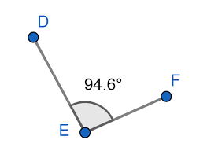

Octusángulo
Un ángulo obtuso es un tipo de ángulo que tiene una medida mayor a 90 grados pero menor a 180 grados. Un ángulo obtuso se caracteriza por ser más abierto que un ángulo recto (90 grados) pero menos que un ángulo llano (180 grados).
- Medida: Un ángulo obtuso tiene una medida mayor a 90 grados pero menor a 180 grados. Esta medida es más grande que la de un ángulo recto pero menos que la de un ángulo llano.
- Forma: Visualmente, un ángulo obtuso se asemeja a una apertura amplia o una "V" invertida. Sus lados se extienden en direcciones opuestas, creando una esquina abierta.
- Ángulo interno: En un ángulo obtuso, uno de los ángulos interiores del triángulo correspondiente es obtuso, mientras que los otros dos son agudos.
- Complementario: El ángulo complementario de un ángulo obtuso es un ángulo agudo. La suma de un ángulo obtuso y su ángulo complementario es igual a 180 grados, formando un ángulo llano.
- Propiedades geométricas: Los ángulos obtusos pueden encontrarse en diversas figuras geométricas y formas. Pueden ser parte de triángulos, cuadriláteros u otras formas poligonales.
- Aplicaciones: Los ángulos obtusos son comunes en la vida cotidiana y en muchas disciplinas, como la arquitectura, la ingeniería y la física. Por ejemplo, en la construcción de estructuras, los ángulos obtusos pueden ayudar a determinar las dimensiones y las formas de los componentes.
